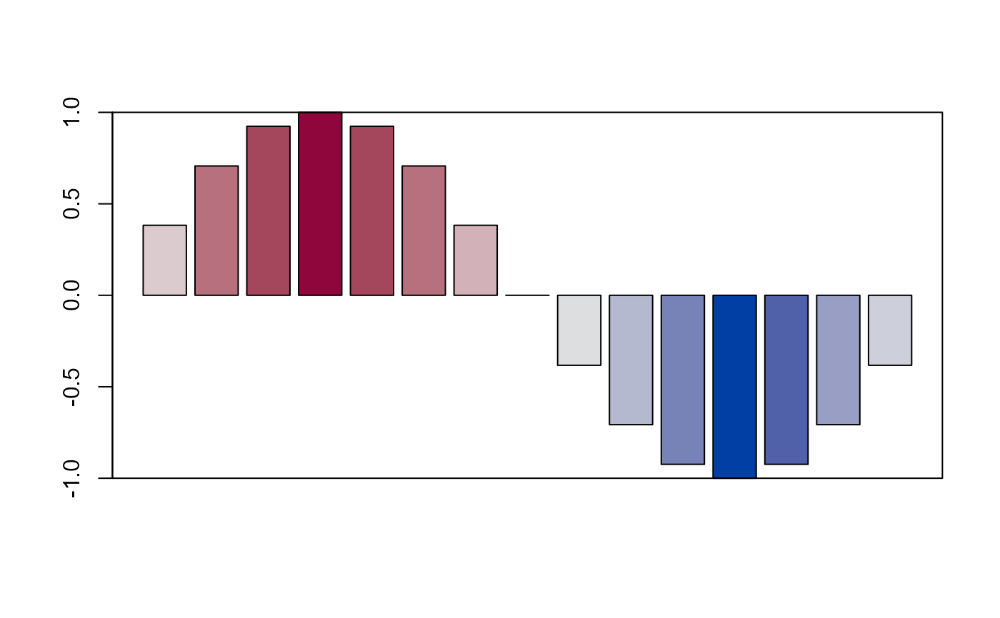
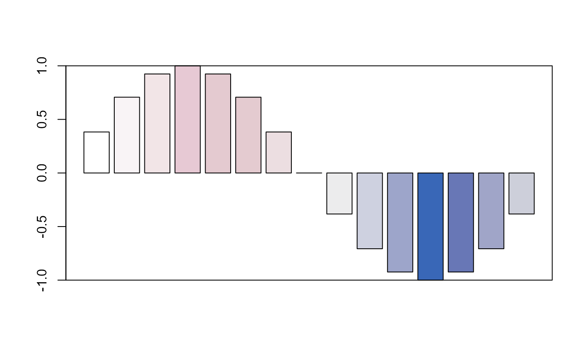
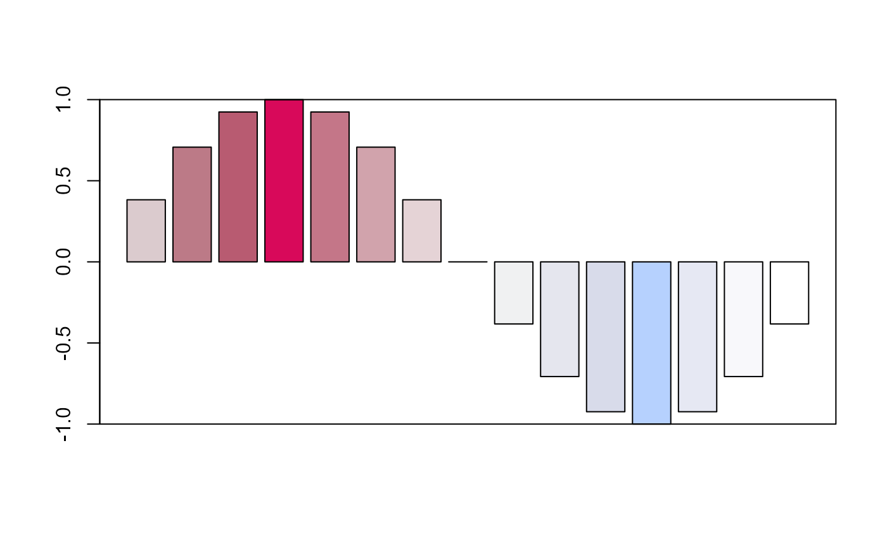

Get color values from a vector inside a regular interval
value2color(
var,
col = hcl.colors(41, "Blue-Red"),
interval = range(var),
n_classes = length(col),
alpha = NA,
beta = NA,
space = "HLS",
verbose = T
)numeric vector
colors
range of values for the color interval (values outside the range are mapped in extremes)
number of classes, see details
value or vector (0 to 1 range) to modify the alpha values
value or vector (-1 to 1 range) to lighten the color values
one of "HCL", "HLS" or "combined" for colorspace::lighten
to display additional information
the default number of classes (n_classes) is the number of colors (col) or length(var) - 1 if length(var) <= n_classes
x <- sin(pi/8 * 1:15)
barplot(x, col = value2color(x))
#> Warning: n same as number of different finite values\neach different finite value is a separate class
box()

barplot(x, col = value2color(x, alpha = seq(0,1,along.with=x)))
#> Warning: n same as number of different finite values\neach different finite value is a separate class
box()

barplot(x, col = value2color(x, beta = seq(0,1,along.with=x)))
#> Warning: n same as number of different finite values\neach different finite value is a separate class
box()
